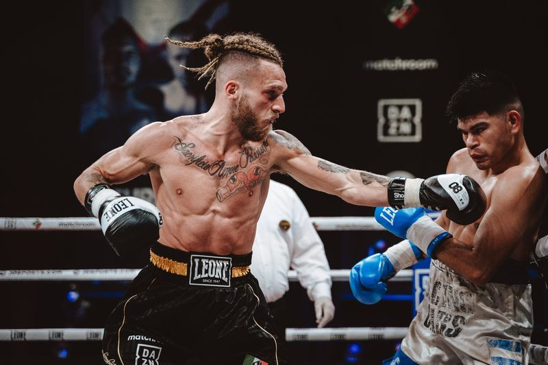
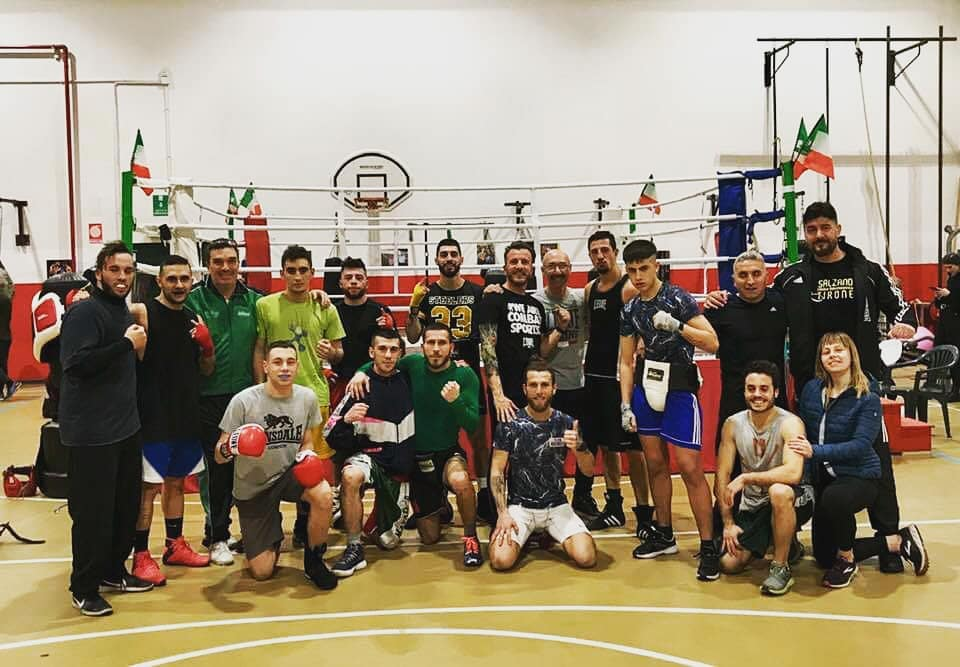
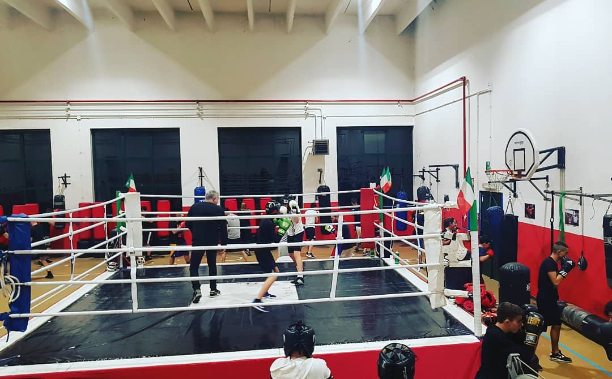
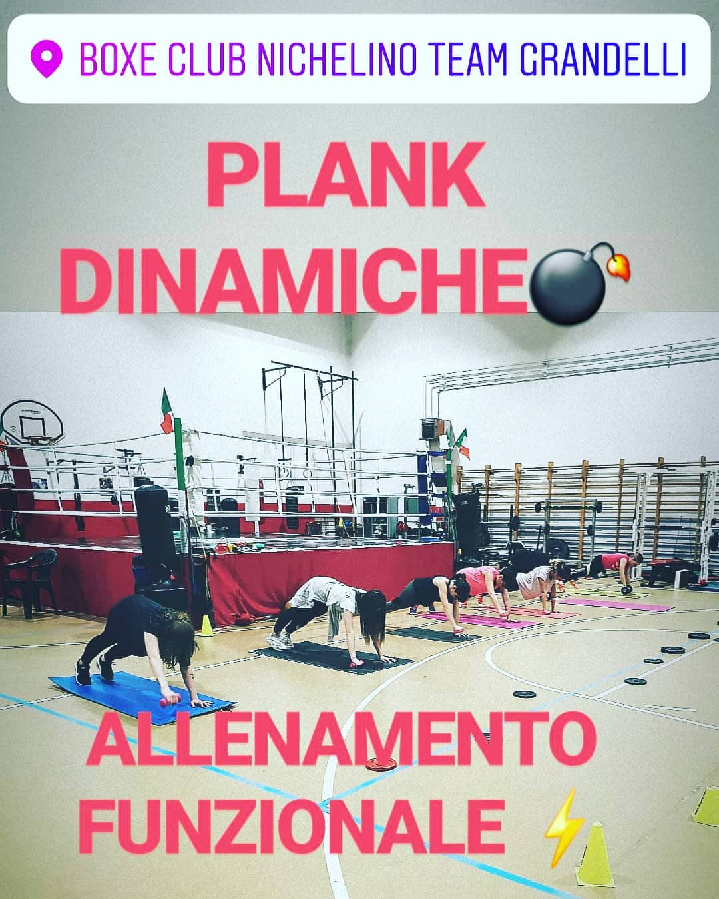
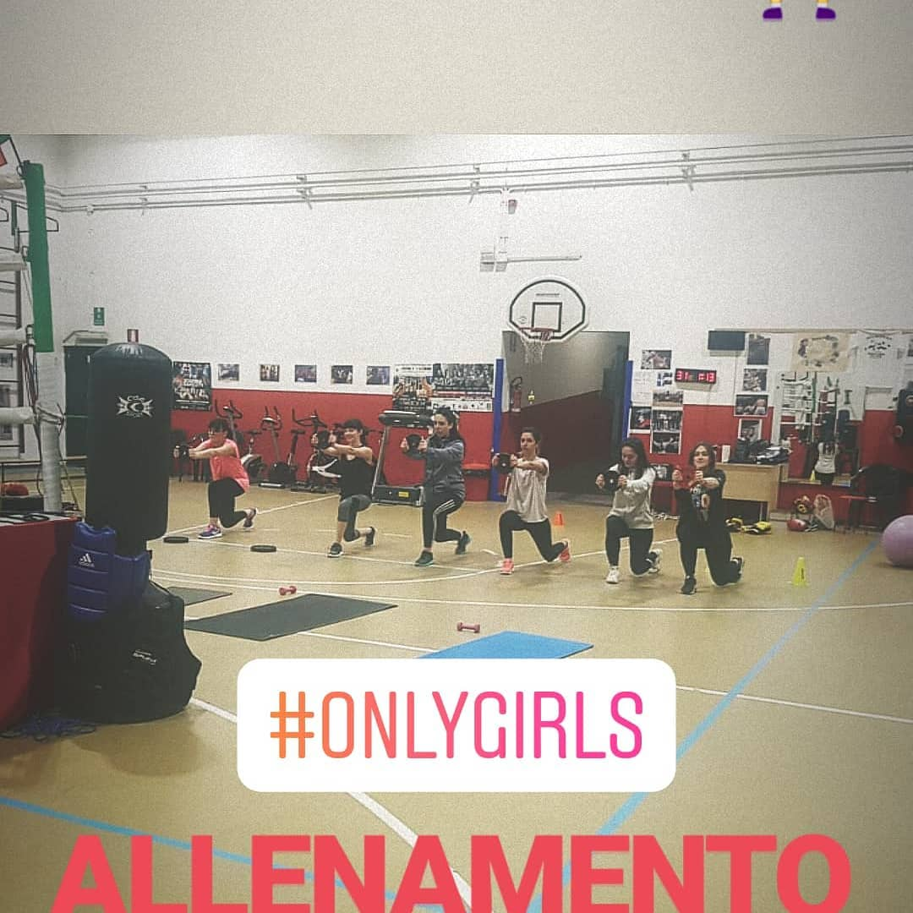
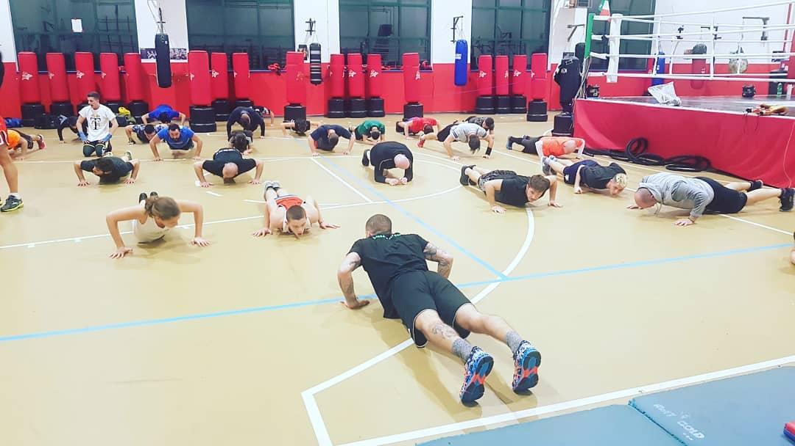
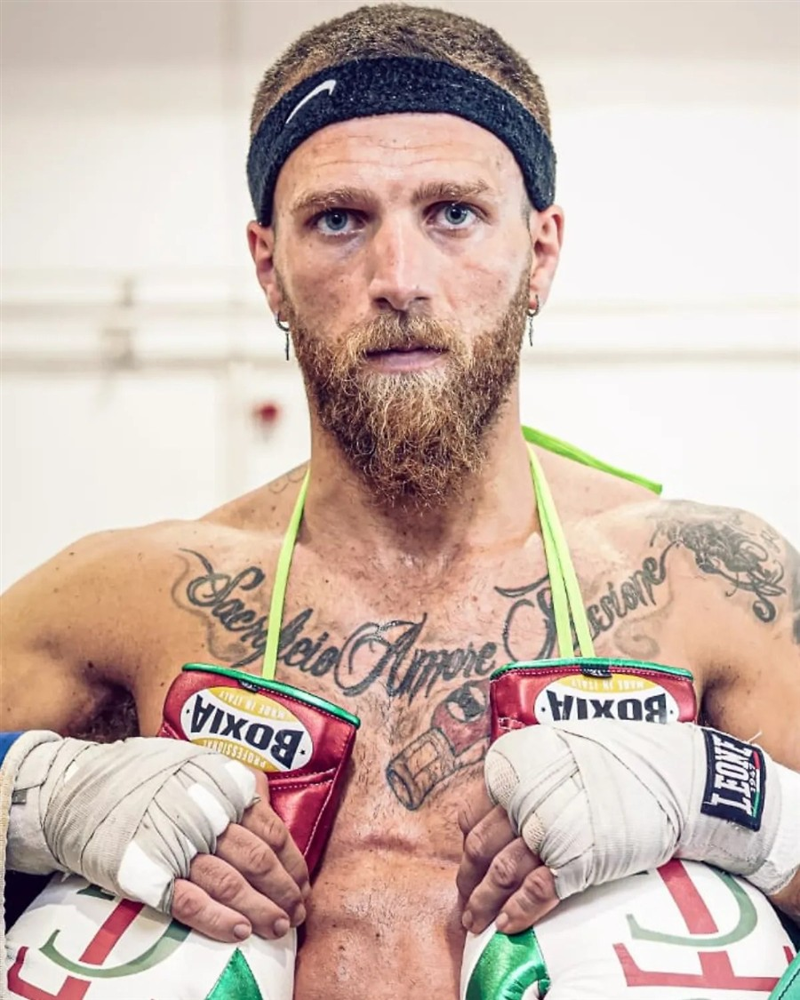

Pre-pugilistica bambini
Coordinazione, gioco e primi fondamentali della boxe in totale sicurezza, con istruttori dedicati ai più piccoli.
Lun · Mer — 18:00–19:00

Via Filippo Turati 12 — Nichelino (TO)
La boxe club che dal 2010 forma atleti, campioni e persone nel cuore di Nichelino. Guidata dalla famiglia di Francesco "Kekko" Grandelli, pugile professionista italiano.

Chi siamo
Il Boxe Club Nichelino nasce nel 2010 nel quartiere Castello, la "zona Coop", tra le case popolari costruite per chi arrivò a lavorare alla Fiat Mirafiori. Oggi è un punto di riferimento sportivo e sociale per oltre 100 persone: bambini, amatori, agonisti e pugili professionisti che si allenano fianco a fianco.
La palestra è di proprietà della famiglia Grandelli, che la gestisce con una regola semplice: nessuno resta fuori per motivi economici. I residenti di Nichelino in difficoltà, con ISEE certificato, si allenano gratuitamente.
La struttura
Un ring regolamentare, sacchi da combattimento, spazio pesi e area funzionale: tutto quello che serve per allenarsi come un professionista, in un palazzetto storico di Nichelino.




Corsi
Dai primi guantoni dei bambini fino al ring da professionisti. Prima lezione di prova sempre gratuita.
Coordinazione, gioco e primi fondamentali della boxe in totale sicurezza, con istruttori dedicati ai più piccoli.
Lun · Mer — 18:00–19:00
Tecnica, sacco, guantoni e sparring guidato per chi vuole allenarsi seriamente o affacciarsi all'attività agonistica.
Lun 19:00–20:30 · Mar/Gio 9:30–10:30 e 18:00–19:00 · Mer 19:00–20:30 · Ven 18:00–19:30
Sessioni supervisionate per lavorare su sacco, corda e tecnica personale con il supporto degli istruttori.
Mar · Gio — 18:00–19:00
Plank dinamiche, kettlebell e circuiti a corpo libero: la boxe come base per un fitness completo, anche per il gruppo #onlygirls.
Consulta gli orari aggiornati in palestra
Per i residenti a Nichelino con difficoltà economiche documentate, l'iscrizione è completamente gratuita.
Richiedi informazioni in segreteria
Per iscriversi è obbligatorio presentare il certificato medico per attività sportiva agonistica/non agonistica e un documento d'identità.
Scrivici su WhatsApp per la prova gratuita
Il campione di casa
Nato a Torino nel 1994 e cresciuto a Nichelino, Francesco è il pugile professionista che allena e rappresenta la palestra di famiglia. Debutta tra i professionisti nel 2015 e da allora costruisce una carriera fatta di titoli e sacrificio, sempre tra il ring e i tappetini della palestra dove insegna ai più giovani.
Statistiche aggiornate sulla base delle fonti pubbliche disponibili (BoxRec, Wikipedia, stampa sportiva) al momento della pubblicazione.
Leggi la storia di Francesco e di suo padre Antonello →Video & Stampa
Interviste, highlights dal ring e articoli che raccontano il Team Grandelli oltre le mura della palestra.
"Il ring crea un legame speciale": il ritratto di Francesco Grandelli tra il ring e i ragazzi della palestra di Nichelino.
Grandelli protagonista della prima edizione del Torino Boxing Show al Pala Gianni Asti.
Il percorso di "Grandelli boxeur nichelinese", dagli esordi giovanili al professionismo.
Dove siamo
Corsi dal lunedì al venerdì secondo il calendario stagionale. Contattaci per conoscere gli orari aggiornati e prenotare la tua prova gratuita.